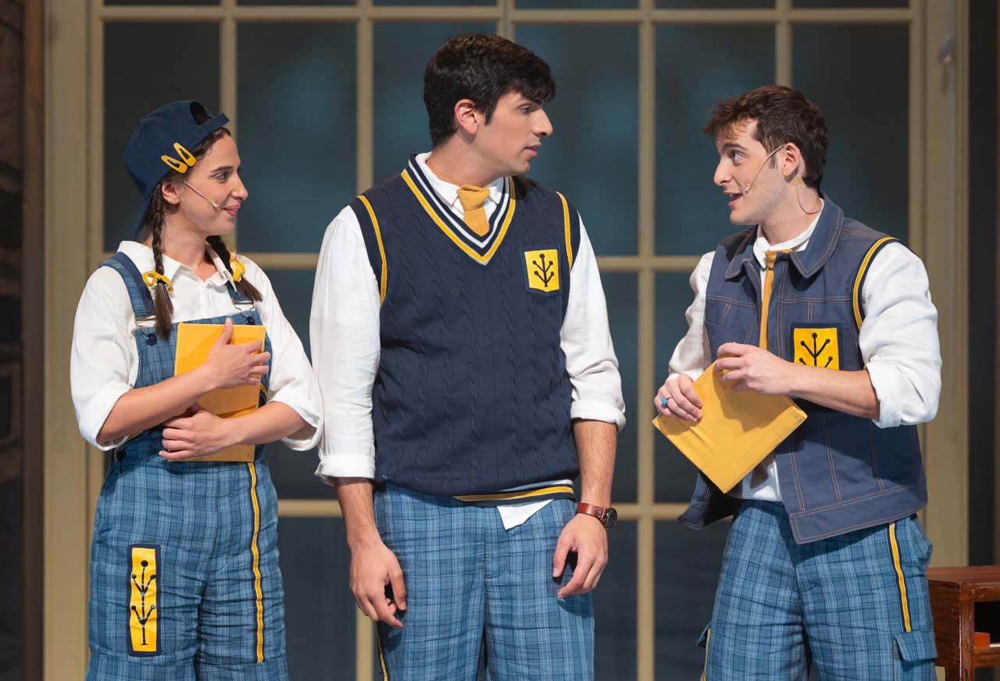
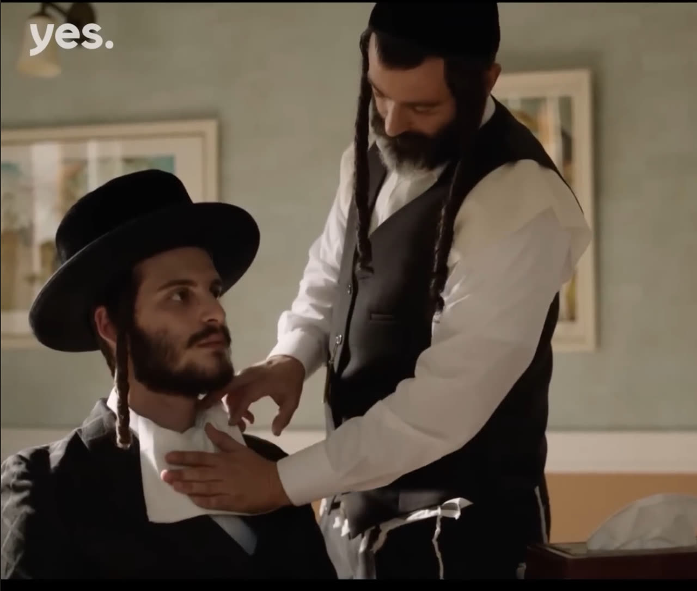
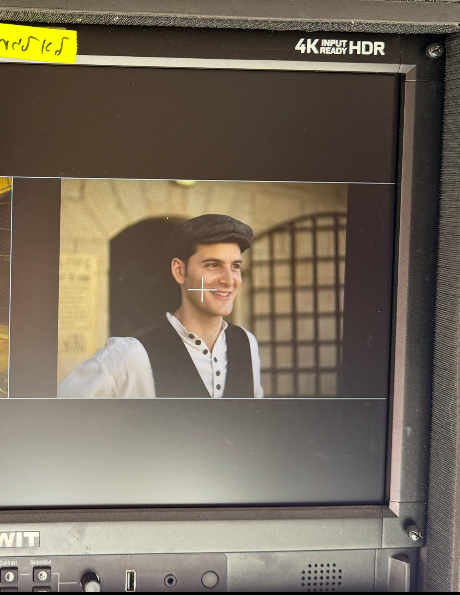
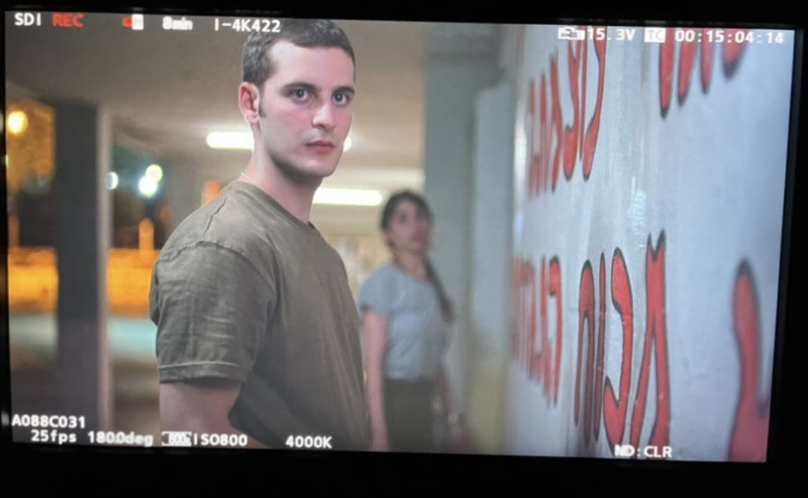

חופש אמיתי נוצר בתוך גבולות.
זה כל ההבדל בין שחקן שמנחש לשחקן שיודע. סדנאות משחק מול מצלמה בשיטת "בחירה חופשית" — כדי שהאודישן הבא כבר לא יהיה מפחיד. הוא יהיה הזדמנות.
יואב רוזנברג, שחקן ומורה למשחק.
רוב השחקנים לא חסרי כישרון.
חסרה להם שיטה.
- קיבלתם טקסט, ואין לכם מושג מאיפה להתחיל.
- יצאתם מאודישן, ומאז אתם רק בודקים את הטלפון.
- אתם יודעים שיש לכם את זה בפנים — פשוט לא מצליחים להוציא את זה החוצה.
כל אלה הם אותו טייק גנרי, בגרסאות שונות. יש דרך אחרת — קוראים לה "בחירה חופשית": לא "להרגיש את הרגע", אלא לבנות אותו.
שלושה דברים שעושים לפני שמדליקים מצלמה.
-
01
פירוק הטקסט
לוקחים דף תסריט ומפרקים אותו: מה הדמות רוצה, מתי זה משתנה, איפה הבחירה שלכם. אף פעם לא מתחילים מדף לבן.
-
02
בחירות מדויקות
בונים רגע שאפשר לשחזר ולסמוך עליו — גם תחת לחץ, גם בטייק החמישי, גם כשהחדר קר.
-
03
נוכחות מול מצלמה
משחררים את הראש, ונשארים עם מה שאמיתי. שקט, ריכוז — והמצלמה מרגישה את זה מיד.
אני עוד עומד מול המצלמה בעצמי.





"חופש אמיתי נוצר בתוך גבולות. ככל שהכלים מדויקים יותר — כך יש יותר מקום לאמת."
בחרו את המסלול שלכם
מגיל 9 ועד שחקנים מקצועיים — שיטה אחת, מותאמת לכל שלב.
הקורס השנתי
18+ התהליך המלאשנה שלמה של עבודה — הכלים הופכים לשפה, וההתקדמות נראית לאורך זמן.
"בחירה חופשית" — בוגרים
18+משחק מול מצלמה לשחקנים מנוסים, הכנה לאודישנים וקהילה שמלווה אתכם הלאה.
"בחירה חופשית" — נוער
14–17טכניקה, ניתוח סצנות ועבודה מול מצלמה — מציאת טביעת האצבע שלכם.
"בחירה חופשית" — ילדים
9–13סביבה חמה ומשחקית — ביטחון עצמי, הבעה ועבודה מול מצלמה לראשונה.
סדנה אישית אחד על אחד
5 מפגשים — כלים פרקטיים, חיזוק מנטלי ותוכנית שנבנית בדיוק בשבילך.
הכנה לאודישן
ניתוח טקסט, צילום אודישן מקצועי וקולנועי ומציאת הייחוד שלכם.
עכשיו התור שלכם.
כתבו לי כמה מילים על איפה אתם נמצאים — ואחזור אליכם עם כל הפרטים, בלי בלה בלה.
תגובה מהירה · ללא התחייבות